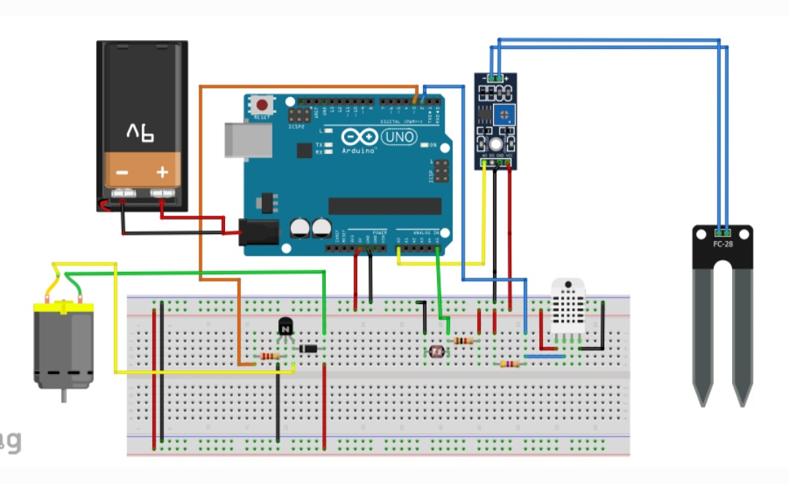
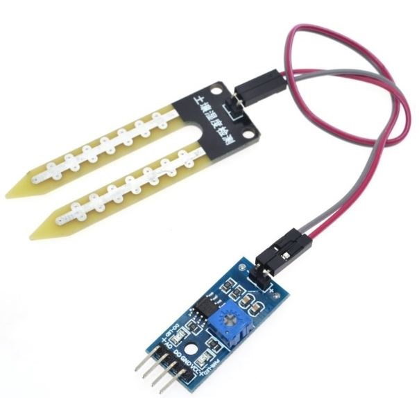

Nuestro sistema de riego automatizado utiliza tecnología de vanguardia para proporcionar una irrigación precisa y eficiente a tus cultivos y áreas verdes. Con características como programación flexible, sensorización avanzada y control remoto, nuestro sistema garantiza un suministro óptimo de agua y maximiza tus rendimientos.
Nuestro sensor de humedad del suelo monitorea constantemente las condiciones de humedad en tu suelo, proporcionándote información precisa para optimizar el riego. Con este dispositivo, puedes evitar el exceso o la falta de riego, garantizando un crecimiento saludable de tus plantas y una gestión eficiente del agua.
